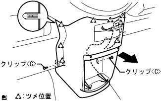
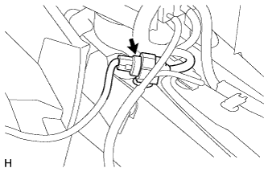
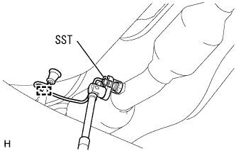

Oxygen sensor removal |
| 1. Battery minor Starminal Cut off |
| 2. Instrument panel finish panel LWR CTR removed |
|  |
Clip <c> 2 places, 8 claws, and remove the instrument panel finish panel LWR CTR.
Cut the connector of the power outlet socket and remove the instrument panel finish panel LWR CTR.
Remove the three screws and remove the instrument Katsup holder.
| 3. Oxygen sensor removed |
|  |
Cut the connector of the oxygen sensor in the room.
|  |
Remove the clamp and pull out the harness outside the vehicle.
Use SST to remove the oxygen sensor.